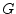

| (10.1) |
The ideal operational amplifier, as shown in fig. 10.1, is determined by the following equation which introduces one more unknown in the MNA matrix.
The new unknown variable  must be considered by the three
remaining simple equations.
must be considered by the three
remaining simple equations.
| (10.2) |
And in matrix representation this is (for DC and AC simulation):
| (10.3) |
The operational amplifier could be considered as a special case of a voltage controlled current source with infinite forward transconductance . Please note that the presented matrix form is only valid in cases where there is a finite feedback impedance between the output and the inverting input port.
To allow a feedback circuit to the non-inverting input (e.g. for a Schmitt trigger), one needs a limited output voltage swing. The following equations are often used to model the transmission characteristic of operational amplifiers.
| (10.4) |
with being the maximum output voltage swing and the voltage amplification. To model the small-signal behaviour (AC analysis), it is necessary to differentiate:
| (10.6) |
This leads to the following matrix representation being a specialised
three node voltage controlled voltage source (see section
9.19.3 on page ![[*]](crossref.png) ).
).
| (10.7) |
The above MNA matrix entries are also used during the non-linear DC analysis with the 0 in the right hand side vector replaced by an equivalent voltage
| (10.8) |
With the given small-signal matrix representation, building the S-parameters is easy.
| (10.9) |